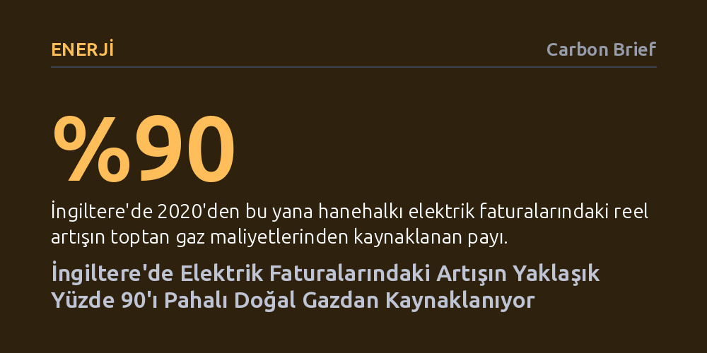

ENERJI · Carbon Brief · 2026-10-22
İngiltere'de elektrik faturalarında 2020'den bu yana yaşanan artışın yaklaşık yüzde 90'ı, yaygın kanının aksine iklim politikalarından değil toptan doğal gaz fiyatlarından kaynaklanıyor. Yenilenebilir enerji destekleri ise mevcut tavan fiyat tarifesi altında faturaları artırmak bir yana net biçimde düşürüyor.
Yüksek enerji faturalarını yeşil dönüşüme ve net sıfır hedeflerine bağlayan yaygın siyasi algının aksine, asıl maliyet yükünü ve fiyat dalgalanmasını fosil yakıt bağımlılığının yarattığını somut verilerle ortaya koyuyor.

İngiltere'de son yıllarda hızla tırmanan enerji faturaları, ana akım medyada ve siyaset koridorlarında sıklıkla ülkenin 'net sıfır' karbon emisyonu hedeflerine fatura ediliyordu. Ancak düşünce kuruluşu Nesta'nın paylaştığı yeni analiz, bu yerleşik anlatının gerçeği yansıtmadığını ortaya koyuyor. Verilere göre, 2020 yılından bu yana hanehalkı elektrik faturalarında görülen reel artışın neredeyse yüzde 90'ı doğrudan toptan elektrik üretim maliyetlerinden ve bu maliyetleri yukarı çeken yüksek doğal gaz fiyatlarından kaynaklanıyor. Hanehalkının doğal gaz faturalarındaki artışın da yüzde 77'si yine doğrudan toptan gaz alım giderlerindeki sıçramaya dayanıyor.
İngiltere hükümetinin Kuzey Denizi'ndeki Jackdaw gaz sahasına onay verirken 'fiyatları etkilemeyeceğini' açıkça kabul etmesine rağmen, enerji krizini yerli fosil yakıt üretimiyle çözme söylemi sürdürülüyor. Oysa 2022'de Rusya'nın Ukrayna'yı işgaliyle başlayan küresel kriz, son dönemde Orta Doğu'daki çatışmalarla birleşince toptan gaz fiyatları megavatsaat başına 75 sterline çıkarak 2022 ortalamasını dahi aştı. Dolayısıyla elektrik faturalarını tırmandıran dinamik, iddia edildiği gibi rüzgâr türbinleri veya güneş panelleri değil, küresel piyasalardaki fosil yakıt bağımlılığı.
Kamuoyunda oluşan genel algı, yeşil dönüşüm ve yenilenebilir enerji desteklerinin faturalara ek bir vergi gibi yansıdığı yönündeydi. Oysa veriler bu iddiayı tamamen çürütüyor. 'Fark sözleşmeleri' (CfD) adı verilen mekanizma kapsamında üretilen yenilenebilir elektrik, mevcut fiyat tavanı tarifesi altında tipik bir hanenin elektrik faturasını yılda 17 sterlin net biçimde azaltıyor. Temiz enerji üretimi, gaz santrallerinin belirlediği pahalı piyasa fiyatlarına karşı tüketiciyi koruyan doğrudan bir maliyet kalkanı oluşturuyor.
Ayrıca hükümetin attığı politika adımları da elektrik üzerindeki ek yükleri önemli ölçüde hafifletti. Eski yenilenebilir enerji teşviklerinin yüzde 75'i genel bütçeye aktarılırken, enerji verimliliği programı sonlandırıldı ve KDV geçici olarak sıfırlandı. Sonuç olarak, Ekim 2020'de tipik bir enerji faturasının yüzde 16'sını (£183) oluşturan sosyal ve çevresel politika maliyetleri, Ekim 2026 itibarıyla yüzde 7'ye (£114) kadar geriledi. Başka bir deyişle, faturalardaki yeşil politika payı artmak şöyle dursun, yarıdan fazla azaldı.
Faturalarda gaz maliyetlerinden sonra en çok tartışılan kalemlerden biri şebeke altyapı giderleri oldu. 2020'den bu yana şebeke maliyetleri tipik bir faturaya 72 sterlinlik bir artış getirdi. Ancak bu artışın 46 sterlini, elektrik şebekesinin ana arteri sayılan iletim hatlarının güçlendirilmesine ve modernizasyonuna harcandı. Enerji Şebekeleri Birliği verilerine göre, elektrik şebekesine yapılan toplam yatırımların yaklaşık yüzde 80'i net sıfır genişlemesinden ziyade mevcut altyapının güvenliğini korumak ve eskimiş varlıkları yenilemek için gerekiyor.
İngiliz basınında sıkça eleştirilen ve yetersiz şebeke kapasitesi sebebiyle rüzgâr türbinlerinin durdurulup gaz santrallerinin devreye sokulması anlamına gelen 'kısıtlama ödemeleri' ise faturada marjinal bir yere sahip. Sistemin dengelenmesine ilişkin bu tür harcamaların tamamı, yıllık 858 sterlinlik ortalama bir elektrik faturasında yalnızca 35 sterlin, yani toplam bedelin sadece yüzde 4'ü kadar yer tutuyor. Buna rağmen siyasi tartışmaların merkezine bu kalemlerin oturtulması, asıl büyük maliyet unsuru olan fosil gazı gözlerden kaçırıyor.
Analiz, enerji tedarikçilerinin işletme maliyetlerinin de 2020'den bu yana 46 sterlin arttığını gösteriyor. Resmi düzenleyici Ofgem tarafından ayrıntılı açıklanmasa da, bu yükselişin arkasında artan fiyatlar nedeniyle faturalarını ödeyemeyen hanelerin biriken rekor enerji borçları yatıyor. Öte yandan, krizin şirket kârlarından kaynaklandığı tezini de regülasyonlar sınırlıyor; çünkü tedarikçilerin kâr payı fatura tutarının en fazla yüzde 2,5'i ile sınırlandırılmış durumda.
Enflasyondan arındırılmış verilerle bakıldığında, ortalama bir hanenin yıllık toplam enerji faturası 2020 sonbaharındaki 1.175 sterlinden 2026 sonbaharında 1.723 sterline tırmanarak yüzde 47 yükseldi. Bu artışın 444 sterlinlik (yüzde 81) ezici kısmı doğrudan toptan gaz maliyetlerinden ileri geldi. Üstelik Orta Doğu'daki jeopolitik kriz sürerken, Ocak 2027'de yürürlüğe girecek yeni fiyat tavanıyla faturaların dörtte bir oranında daha fırlaması bekleniyor. Net sıfır hedeflerini günah keçisi ilan etmek, haneleri yaklaşan bu yeni maliyet şokundan korumaya yetmiyor.